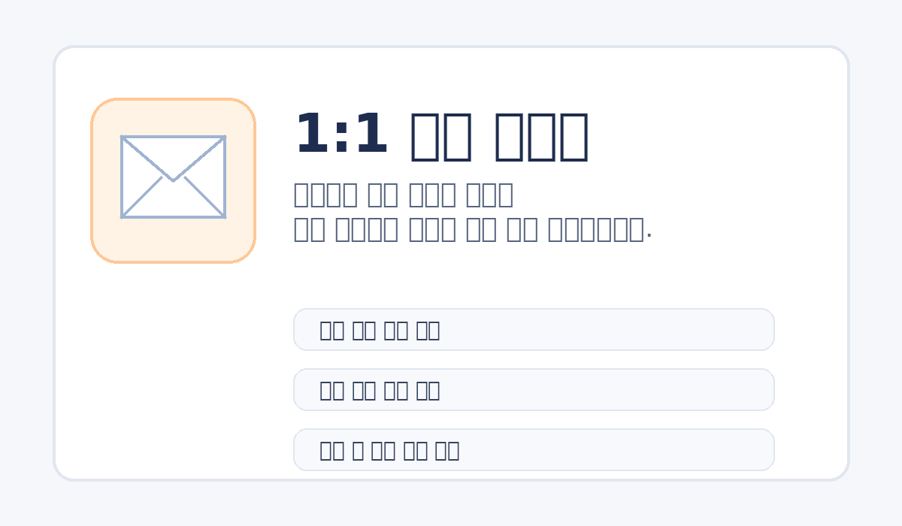

SC마닐라지
기본 단상자에 가장 폭넓게 쓰이는 재질입니다.
처음 주문하시는 분도 바로 이해할 수 있도록 재질 선택, 제작 흐름, 문의 동선을 한 페이지에 정리했습니다. 어려운 업계 표현을 줄이고, 실제 상담에서 자주 나오는 질문을 중심으로 다시 풀어 쓴 안내입니다.
기본 단상자에 가장 폭넓게 쓰이는 재질입니다.

부드러운 톤과 깔끔한 표면감이 장점입니다.

정돈된 표면으로 고급 패키지에 잘 맞습니다.

선명한 발색을 노릴 때 좋은 선택지입니다.

내추럴하고 친환경적인 분위기를 줍니다.

박인쇄 효과를 살리기 좋습니다.
표면지, 골심지, 골 높이에 따라 달라지는 강도와 인쇄 결과를 비교할 수 있게 구성했습니다. 같은 박스라도 재질에 따라 분위기와 결과가 어떻게 달라지는지 확인할 수 있습니다.

상담, 구조 설계, 원단 준비, 인쇄, 목형, 가공, 출고까지 실제 제작이 어떤 순서로 진행되는지 단계별로 이해하기 쉽게 다시 구성했습니다.

회원가입 없이 메일 문의를 남길 수 있고, 필요한 내용을 정리해 sales@box.re.kr로 바로 전달할 수 있도록 구성했습니다.
첫 제작에서 가장 많이 틀어지는 부분은 원단 선택과 일정 이해입니다. 원단 선택이 어긋나면 강도나 인쇄 결과가 기대와 달라질 수 있고, 공정 흐름을 모르면 납기와 샘플 일정도 불필요하게 길어지기 쉽습니다.
그래서 고객지원은 단순한 링크 모음이 아니라, 박스를 처음 맡기는 사람이 가장 먼저 알아야 할 핵심 정보를 중심으로 재편성했습니다. 화면에 보이는 카드만 클릭하면 바로 본문 가이드로 이어지도록 해두었고, 각 페이지는 검색 유입까지 고려한 긴 설명 블록과 FAQ를 포함하고 있습니다.
종이 선택 가이드에서 표면지와 골 종류, 재질별 결과 차이를 확인해보세요.
패키지 제작 과정에서 상담부터 샘플, 인쇄, 출고까지 실제 순서를 먼저 보는 것이 좋습니다.
상담은 메일 중심으로 운영됩니다. 제품 규격, 예상 수량, 사용 목적, 인쇄 유무, 참고 이미지를 함께 보내주시면 검토가 빨라집니다.
칼라박스 제작 시 가장 많이 비교하는 종이 재질과 분위기를 한 화면에서 확인해보세요.

기본 단상자에 가장 폭넓게 쓰이는 재질입니다. 적당한 백색감과 안정적인 인쇄 표현이 장점입니다.

부드러운 톤과 깔끔한 표면감으로 화장품, 건강식품, 선물 박스에 많이 쓰입니다.

더 높은 밀도감과 정돈된 표면으로 고급 패키지 인상에 유리한 재질입니다.

매끈하고 또렷한 인쇄 결과를 노릴 때 좋은 선택지입니다. 선명한 브랜딩형 패키지에 적합합니다.

내추럴하고 친환경적인 분위기를 줄 때 활용합니다. 식품, 리빙, 핸드메이드 패키지에 잘 어울립니다.

검은 바탕이나 특수 질감을 통해 존재감을 높이는 재질입니다. 박인쇄와 조합할 때 효과적입니다.
표면 보호와 시각적 인상을 동시에 만드는 영역입니다. 광택, 반사, 질감 차이를 비교하며 제품 성격에 맞는 방향을 고를 수 있습니다.

표면 보호와 기본 광택을 더하는 가장 범용적인 후가공입니다. 실무에서 가장 많이 검토하는 선택지입니다.

반짝임이 살아 있어 시선 집중도가 높습니다. 화려하고 선명한 패키지에 잘 맞습니다.

반사를 줄이고 차분한 고급감을 줍니다. 브랜드 패키지나 프리미엄 인상 연출에 유리합니다.

로고나 포인트 영역만 반짝이게 살리는 후가공입니다. 박인쇄와 함께 쓰면 고급감이 크게 올라갑니다.
박은 빛 반사와 색상 대비로 브랜드의 존재감을 높이는 후가공입니다. 제품 성격에 따라 금속감의 온도와 분위기를 다르게 가져갈 수 있습니다.

가장 클래식한 프리미엄 표현입니다. 화장품, 선물세트, 기프트 패키지에 안정적으로 잘 어울립니다.

차갑고 정돈된 인상을 주기 좋습니다. 테크, 헬스케어, 미니멀 브랜드에 활용하기 좋습니다.

따뜻하면서도 진중한 느낌을 줍니다. 카페, 베이커리, 리빙 브랜드의 브랜딩에 잘 맞습니다.

차별화 포인트를 만들기 좋은 색박입니다. 일반 금·은박보다 강한 개성을 줄 수 있습니다.

빛에 따라 다채롭게 보이는 효과로 시선을 강하게 끕니다. 한정판, 이벤트, 트렌디한 제품에 적합합니다.